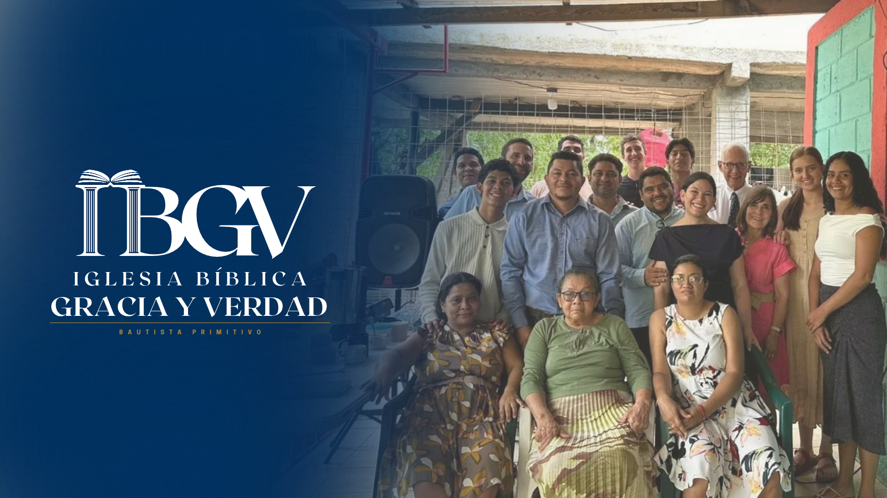

Somos una congregación cristiana que desea glorificar a Dios mediante la predicación de su Palabra, la comunión de los santos y una vida centrada en el evangelio de Jesucristo.
10:00 a. m. – 2:00 p. m.
Almuerzo a las 12:00 m.
7:00 p. m. – 8:00 p. m.
Del Supermercado Palí, 25 metros al Este, frente a las bombas de ENACAL, San Juan del Sur.
Programa radial de Iglesia Bíblica Gracia y Verdad.
Radio Rumbos 96.9 FM
Todos los sábados, de 8:00 a 8:30 a. m.
Comprobando horario...